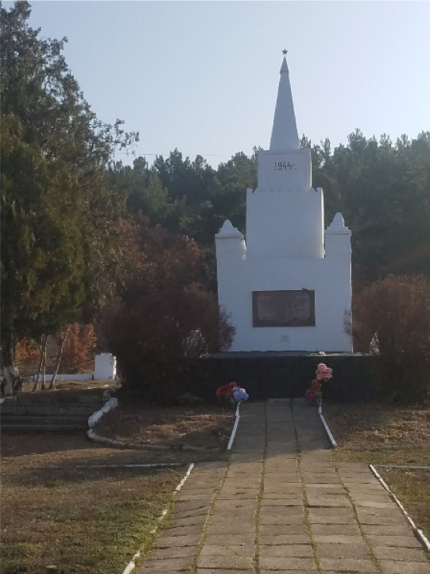
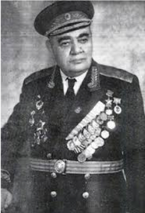
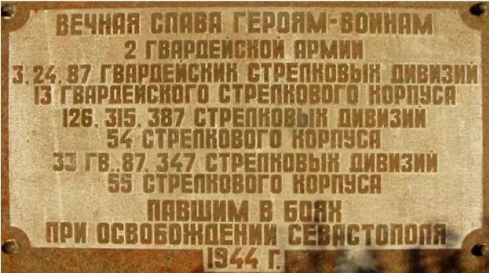
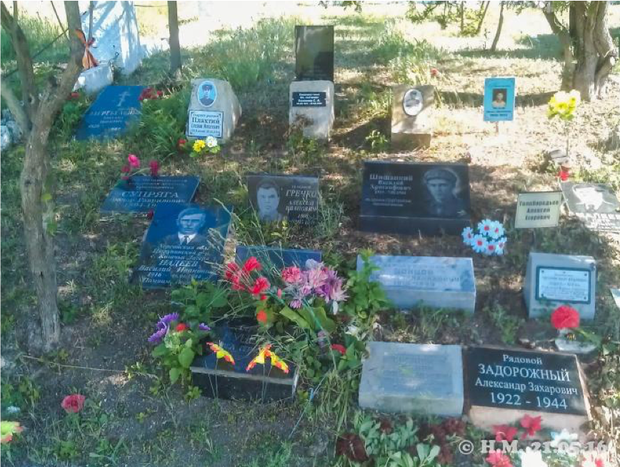

315-я Мелитопольская Краснознамённая ордена Суворова стрелковая дивизия в составе 2-й гвардейской Армии участвовала в боях по освобождению города Севастополя 5–9 мая 1944 года. Под командованием Героя Советского Союза генерала-майора А. Г. Карапетяна дивизия сломила сопротивление противника, преодолев мощный узел укреплений на Мекензиевых горах, и в ночь на 9 мая вышла на Северную сторону Севастополя.

Генерал-майора А. Г. Карапетян

После освобождения Севастополя летом 1944 года на этих братских могилах был сооружён памятник, который сохранился в своём первоначальном виде до настоящего времени.
Погибшие воины дивизии были захоронены в двух братских могилах в районе села Бельбек.
